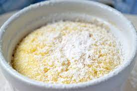

Grießauflauf

Beschreibung
Rezept zur Zubereitung eines Grießauflaufs.
Dieser kann auch als Grießklösse zu verschiedenen Suppen serviert werden.
Zutaten
Grundmasse
- 1 1/2l Milch
- 375g Grieß
- Zitronenschale
Schaummasse
- 80g Fett
- 150-180g Zucker
- 4 Eigelb
Lockerungsmasse
- 1TL Backpulver
- 4 Eischnee
Zubereitung
- Um die Grundmasse zuzuberreiten, den Grieß mit der Zitronenschale unter rühren in der Milch aufkochen.
- Für die Schaummasse das Fett schmelzen und den Zucker und Eigelb einrühren.
- Die Schaummasse in die aufgekochte Grundmasse unterrühren und auf niedriger STufe köcheln lassen oder zugedeckt vom Herd nehmen.
- Für die Lockerungsmasse, die 4 Eiweiß aufschlagen und das Backpulver dabei hinzufügen.
- Die Grundmasse vom Herd nehmen und die Lockerungsmasse unterheben. Nicht zu viel rühren!
- Anrichten.